Chapter 2.1.2 VMware
Wizard
Upon starting up VMware Workstation, select “Create a New Virtual Machine”.
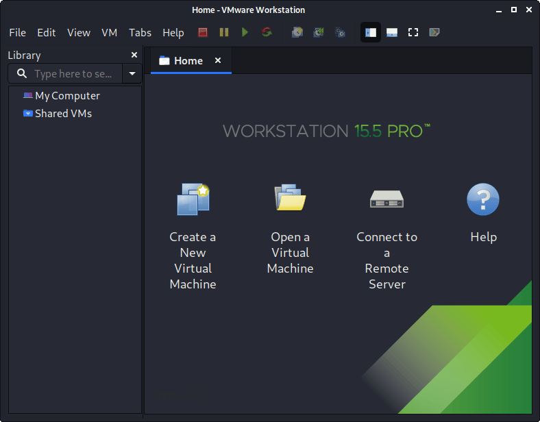When you have the option, select “Custom (advanced)” for the Virtual Machine Configuration, as this will allow us to have more control over the creation of the VM.
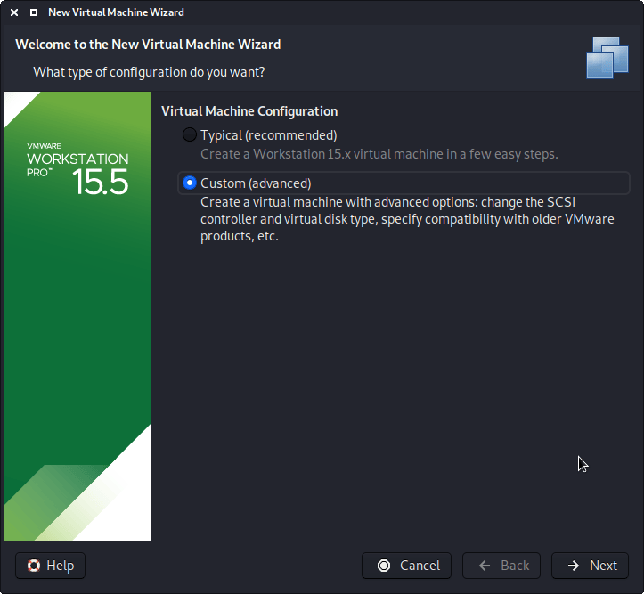The next screen is “Virtual Machine Hardware Compatibility”, which we use “Workstation 8.x”. This allows for more users to benefit from Denios Linux out of the box (without having to edit the .vmx file to downgrade). If you are using a later version of VMware than v8, upon start up, VMware will prompt about upgrading the VM. This will remove any limitations caused by older VMware profiles. However, most users do not have their Denios Linux VM using all these extra resources (see screenshot below), so they wouldn’t benefit from having the latest profile, which is why we ship with a older profile.

On this screen, we select the Denios Linux image to use to install from. We select “Browse”, and navigate to the location of the ISO that we downloaded. For more information on what image to download, we have written up a guide
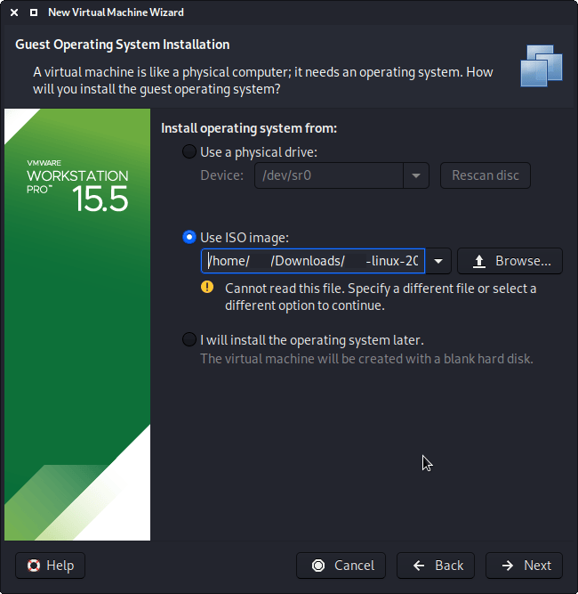When you see the “Guest Operating System” screen, select “Linux”, and then the latest version of Debian for the version (as Denios is based on Debian). In this example, its Debian 10. We are going to be use the x64 image to install Denios, so we have selected 64-bit.
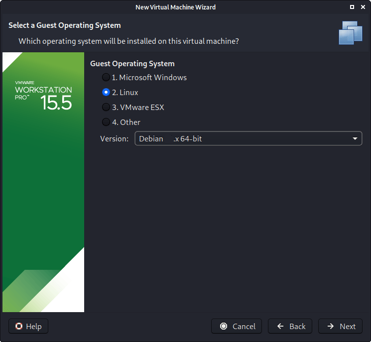The next screen is “Virtual Machine Name”, which is where you name the VM. This name is also used as the filename (such as the configuration, hard disk and snapshot - which is not changed from this point).We are keeping it generic in this guide, by using “Denios Linux” . However for our releases, we use the version number in the name as it is a fixed release (denios-linux-YYYY.N-vmware-ARCH. Example: denios-linux-2023.1-vmware-amd64).
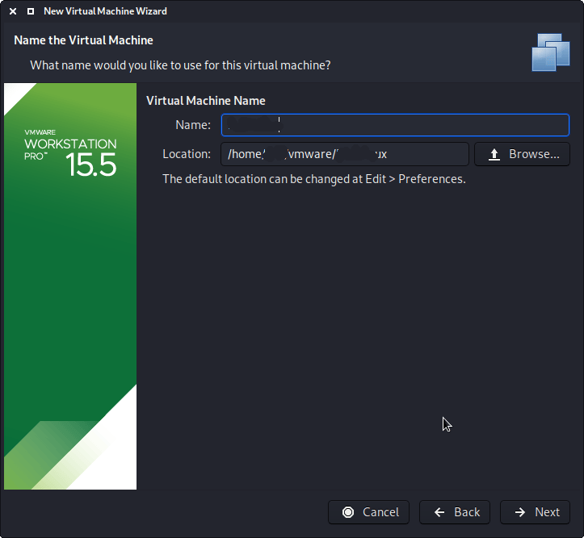The next screen is “Processors”. Here we can start to define how many resources we give the VM. Denios will be able to perform more tasks simultaneously and quicker if it is allocated more resources. We select “2 processors” and “2 cores per processors”, giving a total of 4 cores. You may wish to use more or less depending on your system requirements.

“Memory” is the next section, where we can define how much RAM to use. Again, the higher amount of RAM, the more applications can be open and at increased performance. Various tools inside of Denios can be demanding of resources. When we make the general VMs, we select 2GB (2048 MB) for RAM, but we often increase this for our personal machines as we have high-performing devices with spare RAM which Denios can utilize.
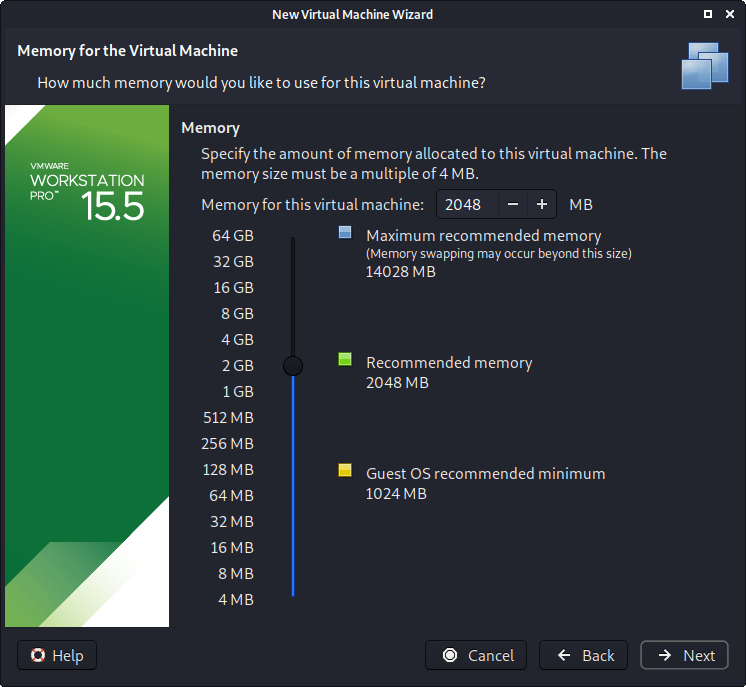We are then presented with “Network Connection”. We default to using a NAT connection. However, this can easy be altered (even when the VM is powered on). This allows for Denios VM to talk to the Internet, as well as the rest of the LAN connection, without it taking up an additional IP address. The downside to this is it will not be able to receive reverse shells (without port forwarding inside of VMware).

Next is “I/O Controller Types”. We accept the default value of “LSI Logic”.

Next is “Virtual Disk Type”. We accept the default value of “SCSI”
The following screen is “Disk”, which allows us to “create a new virtual disk”
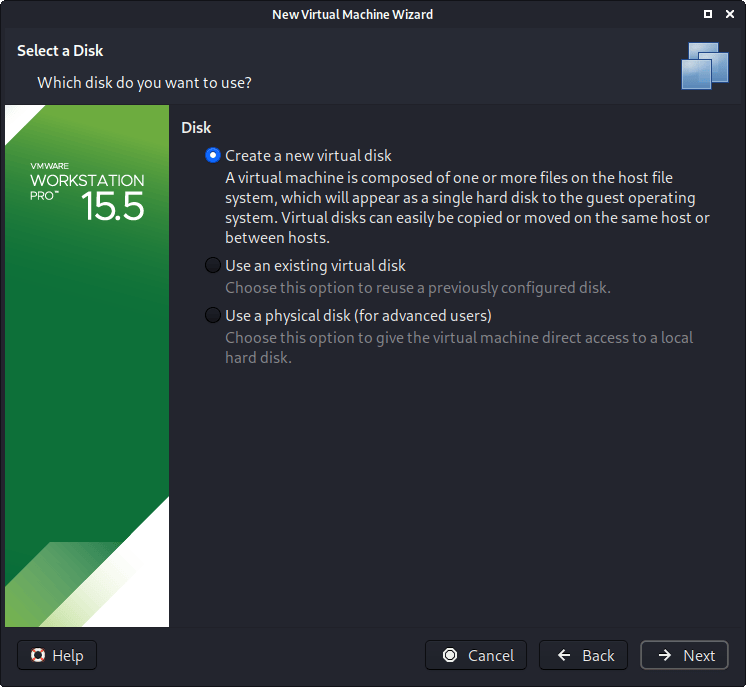This screen below, “Disk Size”, allows us to define how large the virtual hard disk will be. We use “80 GB” for our VMs. We also don’t have it in a single file, but instead “Split virtual disk into multiple files”. The VM hard disk will grow over time, to the maximum size, as we do not enable the “Allocate all disk space”. It is possible to increase/decrease the hard disk after the VM has been created, however, if you have installed Denios, you’ll need to then also grow or shrink the partition for the space to reflect that.

When it comes to the “Disk File” screen, we accept the default value, which has been defined from our VM name earlier in the setup process.
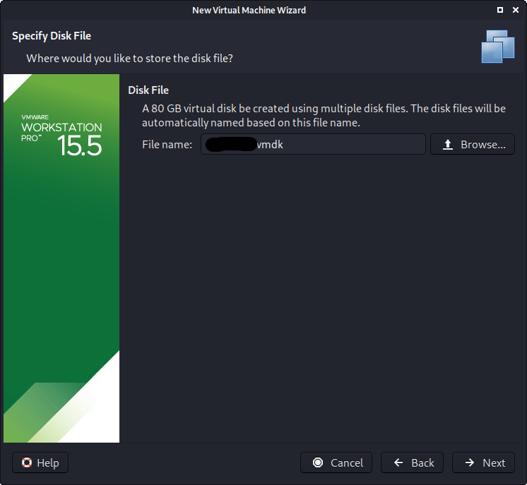We are then presented the final screen for the VM setup wizard, which gives us an overview of the settings we picked. We are happy with what’s shown to us, so we then press “Finish”. If you try and “Customize Hardware” at this stage, before the VM is fully created, not every setting is visibl
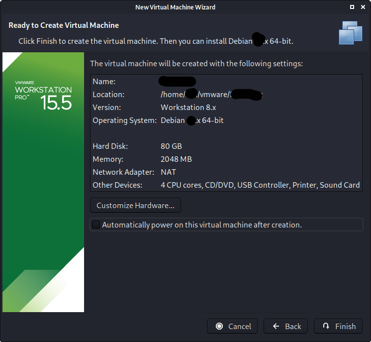If this is the first time using the wizard, you may have the following prompt explaining how installing “VMware tools” will give you a better experience when using the VM. After reading and understanding the page, you may wish to tick the “Don’t show this page again”, before pressing close.

Edit Settings
Before we start up the VM, we now edit its settings, by pressing “Edit virtual machine settings”.
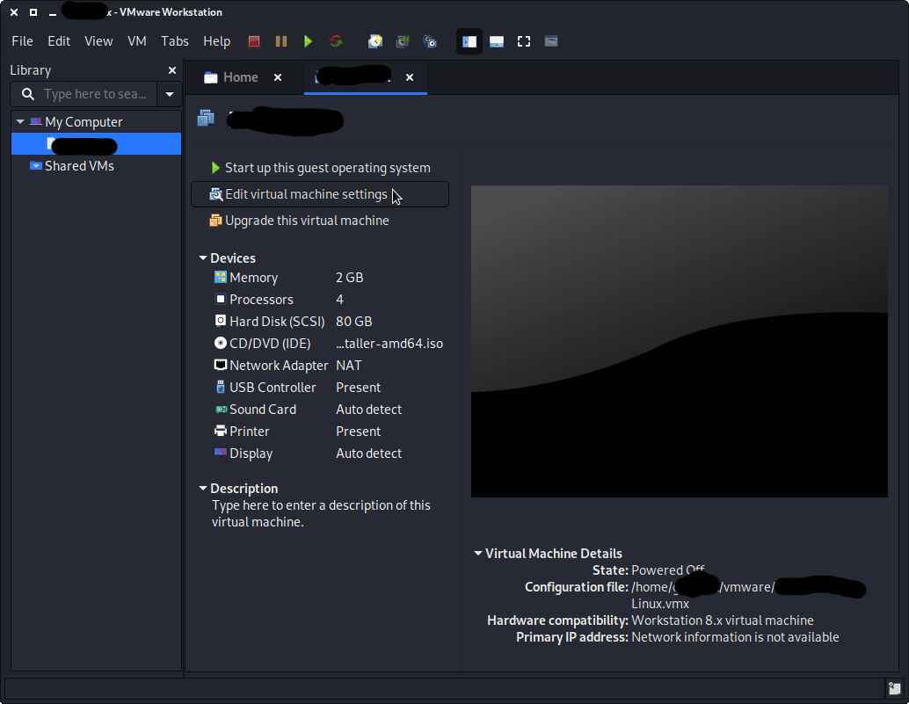We do not have a use for a printer, so we remove it. Navigate to the “Printer” section, and then press “Remove”.

You may wish to edit the “USB” settings to alter how USB devices behave. Here we have disabled “Automatically connect new USB devices” (may not have the option depending on your VMware version) and enabled “Show all USB input devices”.

Another item to point out is in the “Display” section. Make sure that “Accelerated 3D graphics” is disabled, as people have reported that causes issues.
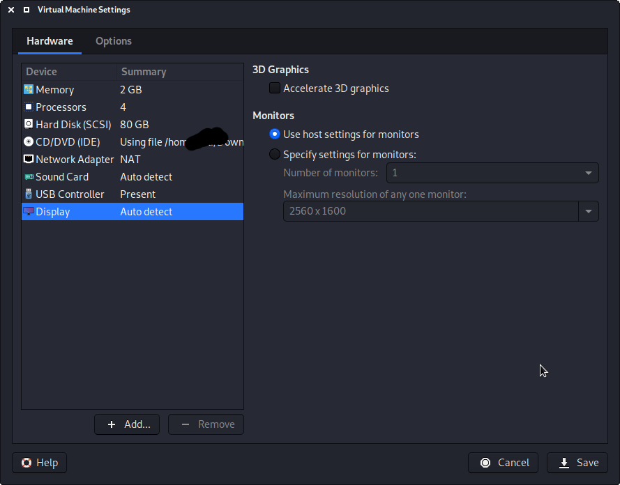We then move over to the “Options” tab, and move down to “Power”. We choose to enable “Report battery information to guests”, as it is a handy thing for users who use Denios on a laptop/notebook.
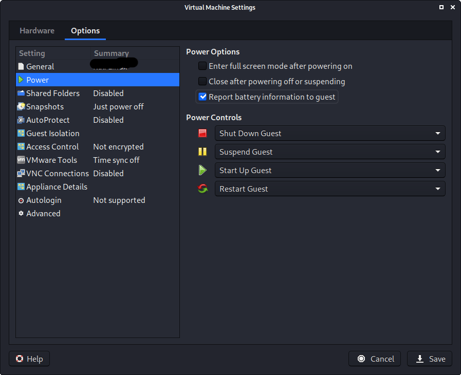In “Shared folders”, we select “Always enable”. At this stage, do not share any paths, as some users may not wish for it.
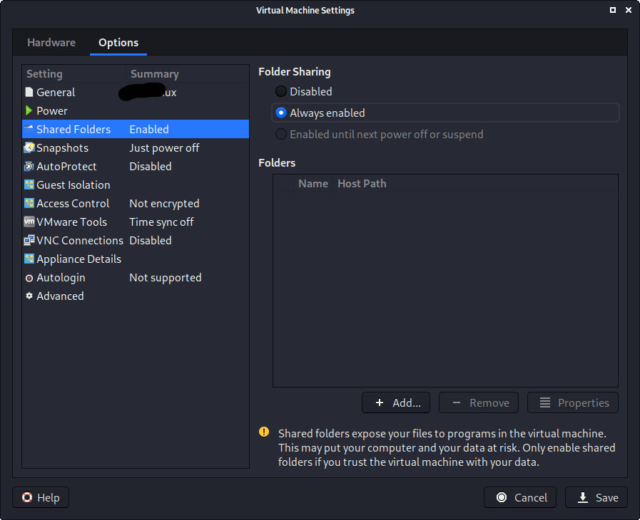The final option we alter is “VMware Tool”, where we enable “Synchronize guest time with host”.
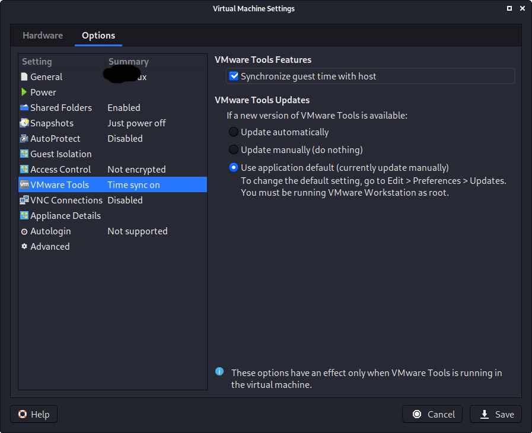After all this is done, we save, start up the VM, and then continue installing Denios Linux as we normally would for a bare metal install. During Denios Linux setup process, the install wizard should detect if its inside a VM. If it is, should then automatically install any additional tools (such as open-vm-tools) to give a better user experience. If you want to manually re-install it, you can see our VMware Guest Tools Guide.